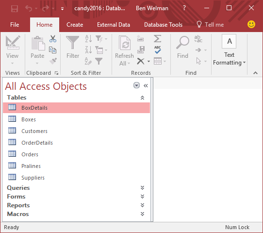
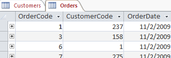
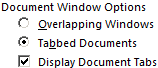

Start Access and then open the file candy2016.accdb.
Note: When a security warning displayed you should you take action. Refer to the part
Security and macros.
Figure: Access with the Snoopy database

The Navigation Pane is on the left side and in it are all
objects of the database. The objects are divided into groups: Tables,
Queries, Forms, Reports, Macros. The pane of the group Tables is unfolded in the
example. The navigation pane itself and the panes of the groups can be folded and
unfolded.
selection of showed objects
unfolding group pane
folding group pane
folding navigation pane
unfolding navigation pane
Double-clicking on an object in the Navigation Pane will open the object and
displays the content in a document window. When you have opened several objects then
these are displayed as tabbed documents.Figure: Tabbed documents

You can change this setting through: File > Options > Current DatabaseFigure: Document Window Options

When you select Overlapping Windows, then the objects are
displayed in separate windows, above each other.
Tip: If you need more space in width you can fold up the navigation pane. Do you
need more space in height, then you can hide the ribbon by double-clicking on a ribbon
tab. Double-clicking again on a tab unhide the ribbon.